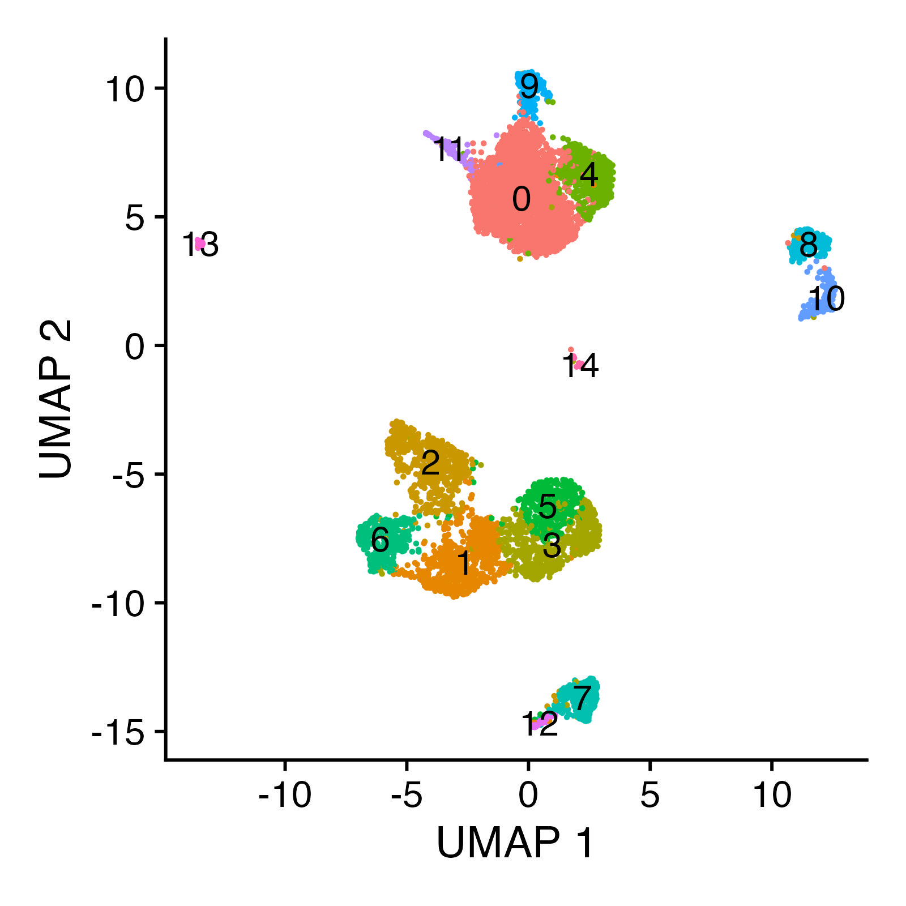
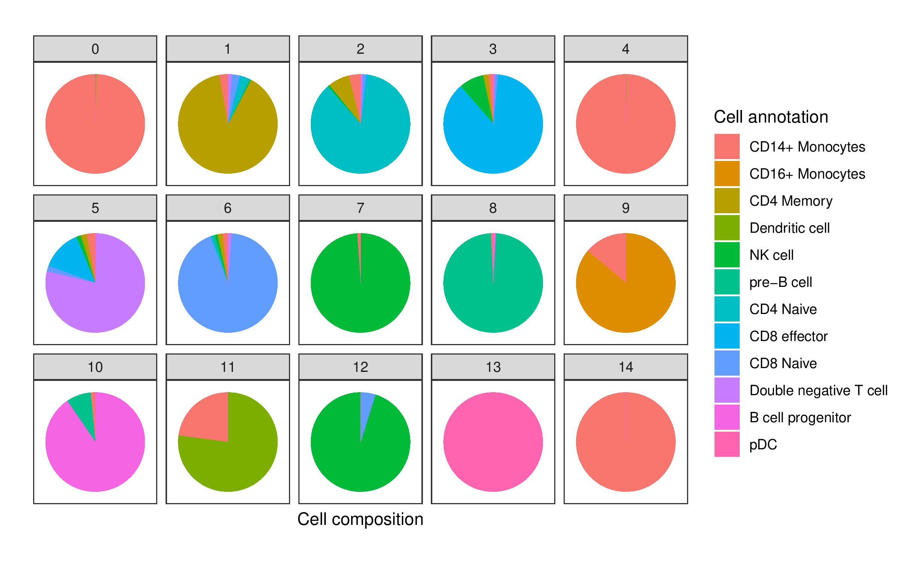

Analysis of scATAC-seq Data
single-cell-atac-seq.RmdIn cellular biology, the study of single cells allows biologists to discover mechanisms not detectable by studying only bulk populations of cells. In recent years, advances in sequencing technologies have enabled the quantification of many single cell features (e.g., transcriptome, proteome, metabolome, 3D contact maps), and such datasets have in turn provided new statistical challenges and spurred the development of new probabilistic models (Lähnemann et al., 2020).
Key to discovering mechanisms from single cell data are analyses of heterogeneity between single cell populations. Heterogeneous patterns across multiple biological features reveal biological differences between groups of cells that differ by physical location, temporal factors, or some other biological function, and such differences can subsequently help generate hypotheses relating features to function. Moreover, depending on the question the resolution of the population might differ, for instance at the tissue level, at the cell type level, or even at physical location level among the same cell types.

Many levels of resolution at which to investigate single cells. Figure reproduced from Lähnemann et al. (2020) and Wolf et al. (2019) under the Creative Commons Attribution (CC-BY) license.
Central to single cell analyses is the clustering of a large population of sampled cells from an experiment. Such clustering often partitions the large population into single cell communities that correspond to some known biological function (e.g., cell type or sampling batch). Once these cell communities are obtained, further analyses can be conducted on or between identified communities to generate biological hypotheses.
üìñ In this vignette, we will:
- show how flinty can be applied to detect statistical heterogeneity in single cell clusters detected from scATAC-seq data,
- demonstrate how flinty can explain drivers of the detected heterogeneity.
Single Cell ATAC-seq Data
We obtain publicly available human peripheral blood mononuclear cell (PBMC) scATAC-seq data from 10X Genomics. Data processing requires Seurat and its extension, Signac (v0.2.5); both can be installed with Bioconductor.
The code below loads and describes the PBMC data before running data processing steps.
## Load packages
library(Seurat)
library(Signac)
library(GenomeInfoDb)
library(hdf5r)
library(tidyverse)
library(dplyr)
library(patchwork)
## Load the original data
counts <- Read10X_h5(filename = "ex_data/scATAC-seq/atac_v1_pbmc_10k_filtered_peak_bc_matrix.h5")
metadata <- read.csv(
file = "ex_data/scATAC-seq/atac_v1_pbmc_10k_singlecell.csv",
header = TRUE,
row.names = 1
)
pbmc <- CreateSeuratObject(
counts = counts,
assay = 'peaks',
project = 'ATAC',
min.cells = 1,
meta.data = metadata
)
pbmc <- Signac::SetFragments(
object = pbmc,
file = "ex_data/scATAC-seq/atac_v1_pbmc_10k_fragments.tsv.gz"
)
## Show the PBMC object before data processing
pbmc
#> An object of class Seurat
#> 79921 features across 9277 samples within 1 assay
#> Active assay: peaks (79921 features, 0 variable features)Data Processing
We perform all steps of data processing up to non-linear dimension reduction and clustering in this tutorial provided by the lab of Rahul Satija.
To summarize the essential steps, we
- Filter individual cells that fail to satisfy criteria associated with five quality control metrics (nucleosome banding pattern, TSS enrichment score, total number of fragments in peaks, fraction of fragments in peaks and ratio reads in blacklist sites provided by ENCODE);
- Perform term frequency-inverse document frequency (TF-IDF) normalization and singular value decomposition (SVD) on the TF-IDF normalized matrix;
- Cluster the cells using the smart local moving (SLM) algorithm.
We obtain \(6954\) cells after Step 1, and Step 3 yielded \(15\) clusters altogether, whose sizes are reported below. Note Step 2 is performed to facilitate Step 3, and we still keep the un-normalized data from Step 1 to run our statistical tests.
## Load summary of clustering, show cluster sizes
load("ex_data/scATAC-seq/scATAC-seq_annotation_cluster.RData")
kableExtra::kable(table(satija.cell.annot.cluster$cluster),
col.names = c("Cluster", "Count")) %>%
kableExtra::kable_styling(position = "center")| Cluster | Count |
|---|---|
| 0 | 2494 |
| 1 | 732 |
| 2 | 627 |
| 3 | 569 |
| 4 | 563 |
| 5 | 432 |
| 6 | 348 |
| 7 | 277 |
| 8 | 245 |
| 9 | 216 |
| 10 | 199 |
| 11 | 122 |
| 12 | 62 |
| 13 | 50 |
| 14 | 18 |
These clusters can be visualized in 2D space using UMAP. The code to reproduce this plot is provided in the Satija lab vignettes linked above.

Furthermore, these clusters correspond to myeloid and lymphoid cell populations. One can identify cell types by identifying cluster-defining biological markers using RNA-seq measurements of the same cells; see the Satija lab vignettes here and there for details on accomplishing this “feature anchoring” step.

Before proceeding with our analysis, we note that the \(79921\) features per individual cell correspond to physical regions along the human genome, and each feature records the number of reads, more precisely Tn5cut sites, mapped by that individual cell to the physical region. These read-based records measure chromatin activity and thus provide information about gene regulation.
Analysis
Data processing has provided us with a dataset \(\mathbf{X}\in\mathbb{N}^{N\times P}\) consisting of \(N=6954\) single cells with \(P=79921\) peak reads/counts features recorded per cell. Additionally, \(\mathbf{X}\) has been partitioned into \(15\) clusters that correspond to certain distinguishable blood cell populations.
We binarize \(\mathbf{X}=(x_{ij})\) by setting each entry \(x_{ij}=1\) if it is positive, and \(x_{ij}=0\) otherwise. Such data compression results in loss of information. However, owing to our compression step itself reducing variability, if our test reports non-exchangeability on the compressed version, then, all other things being equal, it is the case that the original sample exhibits heterogeneity. (This is a general intuition that may not be true if there exist appropriate statistical models for the original features in the uncompressed version. Hence, we place the caveat “all things being equal.” To our knowledge, such a model still does not exist.)
Here is a snapshot of the binarized version of samples from the smallest cluster (Cluster 14).
## Show Cluster 14 (first six cells and first six features) after binarization
load("ex_data/scATAC-seq/bin_satija_keepzeros_15.RData")
subsetted_data[1:6,1:6]
#> 6 x 6 sparse Matrix of class "dgCMatrix"
#> chr1:565113-565543 chr1:569179-569635 chr1:713534-714806
#> AAACTGCGTGCTGAAG-1 . . .
#> AATGGAATCCCACGGA-1 . . 1
#> ACAGCGCAGCCCATTA-1 . . .
#> ACCATCCCACGCGACT-1 . . 1
#> ACGGATTTCTTCCGTG-1 . . .
#> ACTCGGGTCCCGCAAG-1 . . 1
#> chr1:752436-753020 chr1:762144-763353 chr1:779610-780252
#> AAACTGCGTGCTGAAG-1 . 1 .
#> AATGGAATCCCACGGA-1 . . .
#> ACAGCGCAGCCCATTA-1 . . .
#> ACCATCCCACGCGACT-1 . . .
#> ACGGATTTCTTCCGTG-1 . . .
#> ACTCGGGTCCCGCAAG-1 . . .Next, owing to the large number of peak regions (\(P=79921\)) in our scATAC-seq data, for our analysis below we restrict our features to only those peak regions that lie in Chromosome 1. This restriction reduced the number of features to \(P=7824\). Again, we show an example for cells in Cluster 14.
## Restricting to Chromosome 1 only
# Get dimension of the array before restriction to peak regions lying in chr1
dim(subsetted_data)
#> [1] 18 79921
# Restrict peak regions to lie in chr1
subsubsetted_data <- subsetted_data[,grepl("chr1:",colnames(subsetted_data))]
# Get dimension of subarray containing only selected features
dim(subsubsetted_data)
#> [1] 18 7824Contingency of Test
One important handle of our test is the specification of dependencies between features. It is unlikely that the features, which are peak reads, are mutually independent of one another, since peak regions within a larger region of open chromatin may have proximal genes that are co-regulated, which drive peak reads themselves to be statistically correlated. Thus we have to account for some dependency structure.
Here, one advantage is that the user has control over what kinds of dependencies to account for, which makes the test interpretable. For example, accounting for dependencies arising from 3D organization of the genome would mean that the test is performed and its result valid, contingent exactly on such 3D organizational dependencies being the only source of dependence between features.
We will in fact account for dependencies arising from 3D organization of the genome. There has been speculation that the 3D structure of the genome is the primary driver of differences in chromatin accessibility. Because chromatin 3D organization is measured by probing physical interaction between non-adjacent genomic loci and such probing in turn is accomplished by chromatin conformation capture (3C) technologies (Dekker et al., 2002), here we shall incorporate Hi-C information (Lieberman-Aiden et al., 2009) into our tests.
Concretely, we use Hi-C data to partition our features into disjoint sets of dependent features (so-called “dependent blocks”), where we group features into the same sets based on whether they belong in the same topologically associating domain (TAD) as identified by Hi-C TAD callers.

Scatterplot of a Hi-C interaction map of Chromosome 14 of a genome sequenced from lymphoblastoid cells (GM06990). Localized darker patches reveal local regions of increased contact. Plot produced using the Bioconductor package LiebermanAidenHiC2009 with help from this vignette.
Methods to Call TADs on Hi-C Data
There are more than 20 TAD calling approaches; see Pal et al. (2019) for a summary of them. We consider two approaches, DomainCaller — a method proposed by Dixon et al. (2012) that relies on the directionality index — and TopDom — a newer approach that scores patterns of contact frequencies and tests these scores for statistical significance under a non-parametric null distribution Shin et al. (2016). Note both DomainCaller and TopDom are found reliable in a comprehensive meta-analysis of 22 TAD callers by Zufferey et al. (2018). (TADs were first described by Dixon and colleagues, so it should come as no surprise that their DomainCaller method identifies TADs well.)
We provide a guide to generating TAD boundaries in a separate vignette.
A Important Caveat
Because the single cell data provided by 10X Genomics is not accompanied by Hi-C contact maps of the same cells, we instead rely on an external Hi-C dataset consisting of human fetal lung fibroblast (IMR90) cells (Dixon et al., 2012). This introduces one caveat to our analysis: we assume TADs identified from IMR90 cells are approximately identical to TADs in PBMC. Note that there is some evidence suggesting that TADs are reasonably preserved across cell types; see Sauerwald and Kingsford (2018) for instance. Careful quantification of the invariance of TADs toward cell type specification is a topic of ongoing research, and we direct the interested reader to recent work, e.g., Gong et al. (2018), Krefting et al. (2018), and McArthur and Capra (2021).Results
## Load packages and set directories
library(flintyR)
library(Matrix)
library(doParallel)
# Register parallel computation
registerDoParallel()
# Relative directory
rel_dir <- "ex_data/scATAC-seq"Are Clusters Homogeneous?
Our first goal is to check whether each cluster of cells is homogeneous. We run our test on Cluster 14 (which was loaded above), using features grouped into sets based on TAD membership identified by DomainCaller.
## Run test
# Load the set membership of features obtained from calling TADs on Chr1 using DomainCaller
load(paste0(rel_dir, "/domainCaller_boundaries_chr1.RData"))
# Discard indices not assigned to a TAD (13 features)
subsubsubsetted_data <- subsubsetted_data[,-boundaries_chr1$discardIndices]
# Compute p-value (should be 0)
getPValue(as.matrix(subsubsubsetted_data),
block_boundaries = boundaries_chr1$blockBounds,
largeP = TRUE)
#> [1] 1.235778e-107We obtain a \(p\)-value of \(0\). We can run the test on another cluster of cells, say Cluster 12.
## Run test on Cluster 12
# Choose cluster
cl <- 13
# Load binarized counts matrix for that cluster
file_name <- paste0(rel_dir, "/bin_satija_keepzeros_", cl, ".RData")
load(file_name)
# Restrict to chr1 only
data_chr1_only <- subsetted_data[, grepl("chr1:",colnames(subsetted_data))]
# Discard indices not assigned to a TAD
data_chr1_only_tads <- data_chr1_only[,-boundaries_chr1$discardIndices]
# How many blocks are there?
cat(length(boundaries_chr1$blockBounds), " independent blocks in Chr1.", sep = "")
#> 576 independent blocks in Chr1.
# Get p-value using the peak boundaries as block delimiters
# Since N and P are large, use large P asymptotic test
getPValue(as.matrix(data_chr1_only_tads),
block_boundaries = boundaries_chr1$blockBounds,
largeP = TRUE)
#> [1] 0We observe a \(p\)-value of \(0\) for Cluster 12 as well. In fact, our test reports zero \(p\)-values for each cluster. This is true even when we use TAD membership identified by TopDom, which we do not show above.
In our paper, we also describe a second and completely different approach of grouping features by chromosome membership, using the 22 autosomes. This does not require any TAD information or Hi-C data, and amounts to assuming that peak reads within the same chromosome are dependent, while peak reads between different chromosomes are independent. We demonstrate this below using Cluster 12, for completeness. We also observe \(p\)-values of \(0\) for all clusters using this approach.
## Run test on Cluster 12 keeping all chromosomes (except X, Y and mt)
# Check which feature records the last autosomal region
colnames(subsetted_data[,77911:77912])
#> [1] "chr22:51221602-51222487" "chrX:165924-166449"
# Keep only autosomal features
clust12_autosom <- subsetted_data[,1:77911]
# These are the block boundaries for the 22 autosomes
# (which can be generated with the grepl trick in previous chunk)
start_points <- c(1,7825,14007,19004,22111,26085,30952,34837,38137,41387,
45121,49166,53330,55072,57827,60463,63382,67513,69010,
72757,75089,76121)
# Compute p-value (should be 0)
getPValue(as.matrix(clust12_autosom),
block_boundaries = start_points)
#> [1] 0We saw earlier that the \(15\) clusters contain different cell types, so we can also further subdivide our clusters into subclusters comprised uniformly of a particular cell type (e.g., CD4+ cells). We did that and ran the test using all 22 chromosomes again, but obtained zero \(p\)-values for the subclusters, except for the subcluster of four dendritic cells from Cluster 0. These four dendritic cells appear exchangeable at a significance level \(\alpha = 0.05\).
## Run test on Cluster 0
# Choose cluster
cl <- 1
# Load binarized counts matrix for that cluster
file_name <- paste0(rel_dir, "/bin_satija_keepzeros_", cl, ".RData")
load(file_name)
# Load cell type annotation for 6954 cells
load(paste0(rel_dir, "/scATAC-seq_annotation_cluster.RData"))
# Select cell IDs for dendritic cells in Cluster 0
selected_subcluster <-
rownames(satija.cell.annot.cluster[which(satija.cell.annot.cluster$cluster == (cl - 1) &
satija.cell.annot.cluster$annotation == 'Dendritic cell'), ])
selected_subcluster
#> [1] "AGCTGATTCTACATCT-1" "CTCGCTACATGGTAAA-1" "GCCATAAGTCGTAGTT-1"
#> [4] "TGCCTGTGTACTATGC-1"
# Keep only autosomal features
clust0_dendr_autosom <- subsetted_data[selected_subcluster, 1:77911]
# Compute p-value using same block delimiters as earlier
getPValue(as.matrix(clust0_dendr_autosom),
block_boundaries = start_points)
#> [1] 0.2058Note that we did not perform this subcluster analysis using TAD callers to partition features in Chromosome 1, owing to there being too little variability in Chromosome 1 within any subcluster for our analysis to be meaningful.
Thus, our test shows evidence of heterogeneity in the clusters and cell type subclusters, after accounting for either (1) correlations induced on peak read counts by the 3D structure (TADs) of the genome, or (2) dependencies between peaks lying in the same chromosome. However, as noted in our paper, an equally valid interpretation is that our accounting for chromatin-induced or “same chromosome”-induced statistical dependencies between peaks is insufficient.
What Drives Heterogeneity in Clusters?
Given that all \(15\) clusters appear heterogeneous even after accounting for chromatin-induced dependencies, we shall attempt to explain what drives the heterogeneity.
There are two types of heterogeneities, one to do with differences in row sums of samples and another to do with the patterning of zeros and ones even if row sums are not too far apart. Going back to how we binarized our peak read counts, we can think of the first type of heterogeneity describing differences in the total number of positive peak read counts, across all measured peaks, between individual samples. The second type of heterogeneity describes differences in the configuration of positive peak read counts; for instance certain samples may have more positive peak read counts at Chromosome 4 while other samples may have more positive peak read counts at Chromosome 5, despite the total number of positive peak read counts across the genome being not too different.
While we do not have a conclusive biological interpretation of these two types of noise, we know that the first type of heterogeneity may arise due to technical or biologically meaningful noise (even within the same cell type, perhaps due to differences in physical location in a tissue).
Bruno visualizes the two types of heterogeneities. Which one is which?
To investigate the contributions by these two different types of heterogeneities to the overall heterogeneity, we will focus on the version of our test where we restrict ourselves to Chromosome 1 and group our features into sets based on TAD membership. TAD groupings are calculated using TopDom.
Let us consider Cluster 13 (\(N=50\) samples) and Cluster 14 (\(N=18\) samples), which are uniformly annotated as pDC cells and CD14+ monocytes. To see if the first or the second type of heterogeneity explains the overall heterogeneity, we run our test on subsamples whose row sums are restricted to lie within an interval.
Histograms of row sums of samples for Clusters 13 and 14. Vertical dotted lines demarcate the range of row sums included in subsamples on which we run our test.
Concretely, for Cluster 13, we include samples whose row sums are between \(600\) and \(700\) (\(12\) such samples).
## Run test on Cluster 13
# Choose cluster
cl <- 14
# Load binarized counts matrix for that cluster
file_name <- paste0(rel_dir, "/bin_satija_keepzeros_", cl, ".RData")
load(file_name)
# Load TopDom feature groupings
load(paste0(rel_dir, "/topdom_boundaries_chr1_rm0.RData"))
# Subset to Chr1 and restrict row sums
clust13_chr1_restr <- subsetted_data[,grepl("chr1:",colnames(subsetted_data))]
clust13_chr1_restr <- clust13_chr1_restr[,-topdom_boundaries_chr1_rm0$discardIndices]
clust13_chr1_restr <- clust13_chr1_restr[
which((rowSums(clust13_chr1_restr) < 700) & (rowSums(clust13_chr1_restr) > 600)),]
nrow(clust13_chr1_restr)
#> [1] 12
# Compute p-value
getPValue(as.matrix(clust13_chr1_restr),
block_boundaries = topdom_boundaries_chr1_rm0$blockBounds)
#> [1] 0.1996As seen above, the \(p\)-value is insignificant at \(\alpha=0.05\).
We run a similar analysis for Cluster 14 by including samples whose row sums are between \(300\) and \(400\) (\(8\) such samples). We arrive at a similar conclusion.
## Run test on Cluster 14
# Choose cluster
cl <- 15
# Load binarized counts matrix for that cluster
file_name <- paste0(rel_dir, "/bin_satija_keepzeros_", cl, ".RData")
load(file_name)
# Load TopDom feature groupings
load(paste0(rel_dir, "/topdom_boundaries_chr1_rm0.RData"))
# Subset to Chr1 and restrict row sums
clust14_chr1_restr <- subsetted_data[,grepl("chr1:",colnames(subsetted_data))]
clust14_chr1_restr <- clust14_chr1_restr[,-topdom_boundaries_chr1_rm0$discardIndices]
clust14_chr1_restr <- clust14_chr1_restr[
which((rowSums(clust14_chr1_restr) < 400) & (rowSums(clust14_chr1_restr) > 300)),]
nrow(clust14_chr1_restr)
#> [1] 7
# Compute p-value
getPValue(as.matrix(clust14_chr1_restr),
block_boundaries = topdom_boundaries_chr1_rm0$blockBounds)
#> [1] 0.0736Given that these cells make up smaller than \(50\%\) of the total number of cells of their respective cluster, and the row sums for samples from either cluster have high variation, our analysis suggests that the heterogeneities of these two clusters are predominantly driven by the first type of heterogeneity.